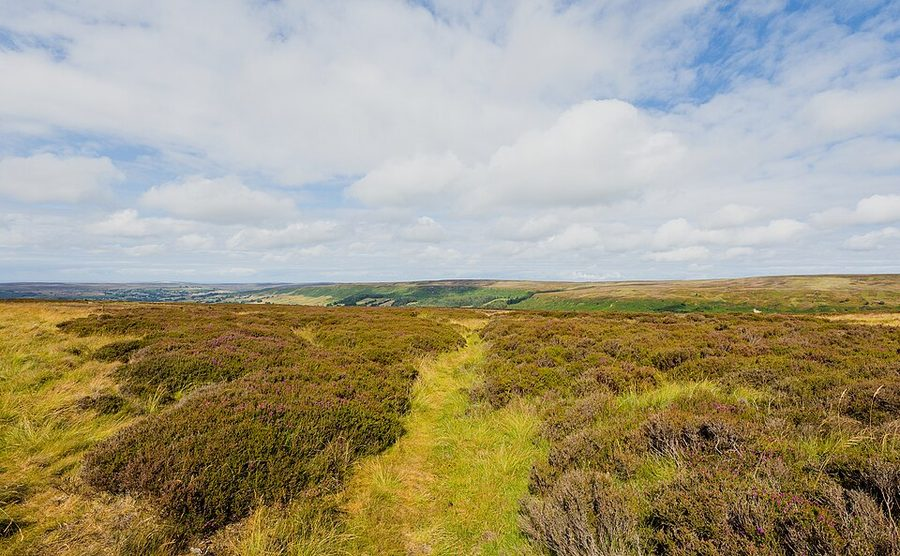
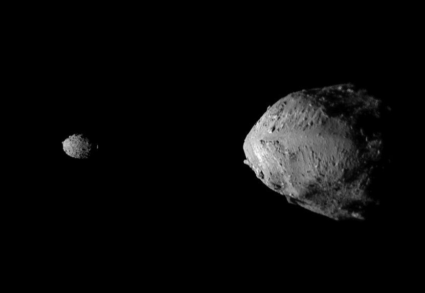

Машина · главное
Пожарная команда приехала раньше пожара
Три месяца с момента запуска продукта, и Corma стоит миллиард. Раунд ведёт NEA, среди ранних инвесторов — Sequoia, Khosla Ventures и Coatue. Продают не модель, а тех, кто чинит последствия.
В понедельник Corma объявила, что закрыла Series A на 125 миллионов долларов при оценке в миллиард. Компания вышла из тени в августе, то есть от первого публичного продукта до статуса «единорога» прошло около трёх месяцев. Всего, по её собственным словам, привлечено 185 миллионов: помимо NEA в списке Sequoia Capital, Khosla Ventures и Coatue.
Что именно продаётся: модели и агенты, обученные защите — то есть та же техника, что и у наступающих, только с другой стороны баррикады. Corma называет себя исследовательской лабораторией, которая занимается защитой, и на этом пытается отличаться от десятков похожих.
Причину такого темпа компания называет прямо: 21 октября. В один день нашли критическую уязвимость в PHP, дыру в Node.js и раскрыли инцидент в LiteLLM — популярном прокси, через который запросы маршрутизируют к разным провайдерам моделей. Последнее стоит отметить отдельно: уязвимой оказалась не модель, а прослойка, через которую к моделям ходят. У всех, кто собирает агентов из чужих API, такая прослойка есть.
Дальше арифметика простая. Чем больше компаний подключают агентов к своим файлам и базам, тем больше точек, где что-то может пойти не так, и тем охотнее платят за страховку. На этом поле уже стоят Armadin Кевина Мандии, профильные подразделения Anthropic, OpenAI и Microsoft и ещё десятки стартапов — рынок молодой и пока ничей.
Коротко
- Раунд125 млн долларов Series A, оценка 1 млрд, ведёт NEA.
- Всего привлечено185 млн: Sequoia Capital, Khosla Ventures, Coatue.
- СрокИз тени вышли в августе 2026 — три месяца до оценки в миллиард.
- Триггер21 октября 2026: уязвимости в PHP и Node.js, инцидент в прокси LiteLLM.
Что здесь факт, а что — обещание
Факт: сумма раунда, оценка, имена инвесторов, дата выхода из тени и дата инцидентов 21 октября — всё это из объявления компании и публикации TechCrunch.
Не факт: что обученные агенты действительно защищают лучше людей и лучше конкурентов. Независимых замеров на живых атаках нет ни у Corma, ни у остальных; оценка в миллиард — это цена веры инвесторов, а не выручка и не доказанное качество.
Вывод редакции: в ИИ-бюджетах появляется новая строка — не «сделать умнее», а «не дать натворить». Для одиночки, который собирает агентов из чужих API, главный урок дня не в раунде, а в LiteLLM: проверять надо не модель, а маршрутизатор.
Книги
Второй материал · 5 минутПремия, на которую нельзя подать заявку
Cercador Prize — единственная в мире премия за перевод, которую присуждают продавцы книг, читая то, что им самим нравится. В этом году приз ушёл Дэвиду Маккею за роман нидерландской писательницы Аннет Даанье.

Шестнадцатого ноября жюри Cercador Prize назвало лауреатом Дэвида Маккея — за перевод романа Аннет Даанье «The Song of Stork and Dromedary», выпущенного FSG Originals. Приз — тысяча долларов. Жюри под председательством Пирс Олквист из Brookline Booksmith сформулировало так: книга «ошеломляет амбицией даже среди сильных финалистов этого года».
Роман устроен как лабиринт: связанные истории, письма, дневниковые записи — жизнь писательницы и долгая жизнь её текстов. Вдохновлён он сёстрами Бронте, прежде всего Эмили, и держится на йоркширской пустоши. Маккей, по словам жюри, справился с самым трудным: с тем, как язык меняется на протяжении двухсот лет, и с тем, чтобы это изменение было видно в переводе — не потеряв ни одного слоя.
Самое интересное в этой премии — её устройство. Она основана в 2023 году Джастином Уоллсом и Спенсером Рачти и остаётся единственной премией за перевод, которую присуждают книготорговцы. Заявок не принимают вовсе: жюри само составляет шортлист из того, что прочитало по собственному вкусу, без жанровых ограничений — от прозы до мемуаров и поэзии.
Для переводчика это редкая новость: приз, который нельзя выпросить у издателя, нельзя купить участием и нельзя высидеть в шортлисте по знакомству. Только читатель, который взял книгу с полки и не смог отложить.
Небо
Заметка · 4 минутыДругая сторона Дидимоса
Аппарат Hera прислал первый крупный план системы Дидимос — Диморф. Учёные ждали знакомого пейзажа, а увидели новый мир с валунами, кратерами и бороздами.

26 сентября 2022 года зонд DART намеренно врезался в Диморф — меньший астероид пары — и сдвинул его орбиту вокруг Дидимоса. Европейский аппарат Hera прибыл посмотреть на последствия и передал первый близкий снимок системы.
Дидимос в диаметре 780 метров, Диморф — 151 метр. На новом кадре Диморф почти целиком в тени, зато Дидимос виден с той стороны, которую камера DART не показывала. «Первое, что мы сказали, было: вот это да!» — приводит ESA слова научного руководителя миссии Патрика Мишеля. Центральный гребень вдоль экватора остался на месте, но всё остальное выглядит иначе: множество валунов, кратеров и похожие на борозды полосы.
Главный вопрос, который теперь разбирают: не долетели ли до Дидимоса обломки, выбитые ударом. Астероиды разделяет около километра — по космическим меркам соседняя комната. Если часть выброса осела на старшем соседе, то у человечества появился первый опыт наблюдения за тем, как удар, устроенный людьми, меняет не только цель, но и её окружение.
Небо
Заметка · 3 минутыБелые камни на красном
Ровер Perseverance нашёл за пределами кратера Езеро породу, которая на Земле хранит микробные следы лучше всего. Кремний, отложенный водой, — и достаточно крупный, чтобы его наконец можно было изучать приборами.
В районе «Идуби» — это древняя марсианская кора в области Lac de Charmes, за пределами кратера Езеро — команда ровера обратила внимание на россыпь необычно светлых камней. Они выделяются на тёмной, запылённой поверхности сильнее, чем все магматические и ударные породы, которые ровер изучал раньше.
Данные SuperCam подтвердили догадку: это не магматическая порода, а порода, богатая гидратированным кремнием. Такой кремний на Земле образуется в горячих источниках, в почвах и в грунтовых водах — то есть в средах, часть которых способна поддерживать жизнь. И он же исключительно хорошо сохраняет микроокаменелости.
Кремниевые породы попадались Perseverance и раньше, на внутреннем валу Езеро, но там отложения были слишком мелкими: приборы не подведёшь, химию и минералогию не снимешь. В «Идуби» масштаб другой, и кампания детальных измерений уже идёт. Снимок, о котором пишет команда, сделан левой Mastcam-Z 29 октября 2026 года, на 2023-е марсианские сутки работы.
Осторожность здесь обязательна: гидратированный кремний — не признак жизни, а лишь одно из лучших мест, где её следы могли бы сохраниться. Пока речь о том, что появился объект, к которому стоит подводить приборы.
Инструментарий
Заметка · 4 минутыРазрешения по одному
Apple переделывает защиту macOS под агентов: полный доступ к диску больше не одна кнопка, а два разных разрешения с объяснениями. Появляется и режим «спрашивать каждый раз».
В понедельник Apple опубликовала для разработчиков описание новых правил безопасности в macOS 27.3 — продолжение октябрьского обещания. Формулировка компании в блоге прямая: прежде чем давать приложению «полный доступ к диску», пользователь должен понимать, что под угрозой все данные на его машине.
Что меняется по существу. Прежние «Device Control» и «Data Access» разделены на два разных пункта — System & App Protection Override и Accessibility, чтобы было видно: первый означает отказ от встроенной защиты. Разрешение теперь выдаётся одним способом — выбором приложения из списка, и с подсказками давать доступ только тем приложениям, которым он действительно нужен.
Дальше — самое интересное для тех, кто держит агентов локально. Появится настройка, при которой приложение спрашивает разрешение каждый раз, когда ему нужен доступ. Звучит как помеха автоматизации, и это она и есть, но зато позволяет пробовать локальные агенты, не выдавая им карт-бланш навсегда. Плюс индикатор прозрачности: он загорается, когда одно приложение управляет другим через тот же System & App Protection Override.
Контекст: Apple пошла на это после двух историй — журналистки, заявившей, что приложение Meta Muse прочитало её личные сообщения без согласия, и публикации Wired об уязвимости в macOS-версии ChatGPT, через которую можно было добраться до чувствительных данных. Разработчикам, которым полный доступ нужен по делу — резервное копирование, средства доступности, — оставили исключения-«entitlements».
Тяжёлый звук
Заметка · 3 минутыПятьдесят один вечер в Хэппи-Холлоу
Cursive отмечают двадцатилетие альбома Happy Hollow туром на 51 концерт и переизданием на трёх пластинках с двадцатью бонусными треками.
Тур называется «Return to Happy Hollow» и начинается 3 марта в денверском Bluebird Theater, а заканчивается 16 мая в омаховском The Waiting Room. Между ними — пятьдесят один город, включая Лос-Анджелес, Хьюстон, Чикаго, Филадельфию и Нью-Йорк. На разогреве Smidley, The Casket Lottery и Small Brown Bike.
Билеты — с 20 ноября, с десяти утра по местному времени. Расширенное переиздание Happy Hollow выходит 27 ноября, в «чёрную пятницу» Record Store Day: три пластинки цветного винила на Run For Cover, оригинальный альбом плюс двадцать бонусных треков — демо, дубли и би-сайды с тех же сессий, в вырубном конверте с ретроспективными фото и заметками группы.
Happy Hollow вышел в 2006 году и был продолжением The Ugly Organ — пластинки, которая сделала Cursive заметными. Двадцать лет спустя группа едет играть его целиком не из сентиментальности: у альбома про веру, лицемерие и провинцию за это время появилось довольно много новых слушателей, которым тогда было немного лет.